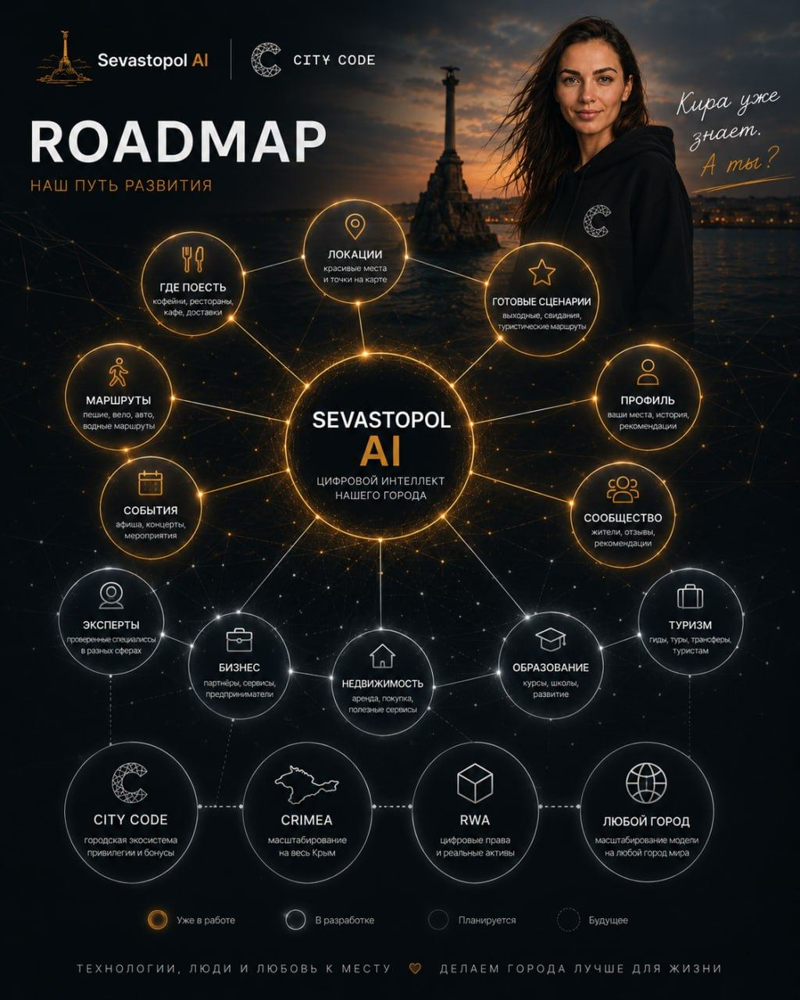

Sevastopol AI открывает город: где поесть, где закат, какой маршрут. City Code превращает открытие в закрытое сообщество. Crimea RWA превращает живую экономику города в реальное владение.
200+ мест еды100+ локаций6 модулей курса57 терминов
44.6167° N · 33.5258° E — Севастополь

Sevastopol AIбот по городу
200+
мест еды в боте
01 → 03
открыть · войти · владеть
Sevastopol AI✦ City Code ✦Crimea и RWA✦ YuRich и RWA Course ✦Глоссарий✦ и ЦФА для бизнеса ✦Книга «RWA / и ЦФА. Токенизация»✦ Цифровые города ✦
01Направления
Город. Круг. Владение.
Три модуля одной системы, а не три разных проекта. Сначала город отвечает на вопрос, потом круг пускает внутрь, потом экономика города может стать выпуском.
01 · Открытие
Sevastopol AI
Телеграм-бот по городу. Где поесть, где закат, какой маршрут, что происходит сегодня. 200+ мест еды, 100+ локаций, маршруты и события, фото и координаты. Заходят с одним вопросом — потом добавляют свои места.
Закрытый круг вокруг Севастополя. Не скидочная карта. Шесть ключей: свод правил, привилегии, скидка у своих, партнёры, закрытые мероприятия и люди. Доступ — по заявке или за вклад в город.
В городе уже есть оборот. Crimea и RWA смотрит, можно ли долю этой кассы собрать в выпуск ЦФА по 259-ФЗ: сначала реальная точка, потом бумага, потом оператор из реестра ЦБ. Ниже на сайте — учебный макет, не продажа.
YuRich не оператор информационной системы и не биржа. Выпуск ЦФА делает оператор из реестра Банка России. Учебные макеты на сайте — не оферта и не финансовая рекомендация.
04Формула
Как одно рождает другое.
Вместо чужих отзывов — собственная логика системы. Её можно проверить по модулям выше.
ШАГ 01 · ОТКРЫТИЕ
«Открытие рождает участие»
Человек открывает бота с одним вопросом о городе и остаётся, потому что город отвечает лучше поиска.
ШАГ 02 · УЧАСТИЕ
«Участие рождает сообщество»
Участник добавляет места, ходит на события и входит в круг своих. Так появляется City Code.
ШАГ 03 · ВЛАДЕНИЕ
«Экономика становится владением»
У круга уже есть живые бизнесы и касса. Дальше честный вопрос Крыма и RWA: можно ли долю этой кассы оформить как владение по закону.
05Для бизнеса
Сборка выпуска ЦФА.
Три шага и честные цены разбора. Выпускает оператор из реестра ЦБ, YuRich собирает конструкцию и говорит «нет», если заём дешевле.
Экосистема Севастополя в трёх шагах: Sevastopol AI открывает город, City Code превращает открытие в закрытое сообщество, Crimea и RWA превращает живую экономику города в реальное владение. Сверху язык рынка: курс, глоссарий и книга.
По заявке или за вклад в город. Напиши в личку: кто ты, чем занимаешься в городе и чем можешь быть полезен кругу. Скидочной картой City Code не является: внутри правила, партнёры, мероприятия и люди.
Нет. YuRich не оператор информационной системы и не биржа. Выпуск делает оператор из реестра Банка России по 259-ФЗ. Моя работа: разобрать актив и кассу, собрать конструкцию выпуска и посадить её на площадку. Учебные макеты на сайте — не оферта.
Нет. Курс YuRich и RWA — про понимание: что человек покупает, когда ему показывают токен на актив. Матчасть, механика, регулирование, риски и карта рынка. Без трейдинга, сигналов и финансовых рекомендаций.
Созвон 30–40 минут без оплаты. Разбор актива и кассы — 80 000 ₽, 1–2 недели. Сборка выпуска — 250–400 тыс. ₽, 2–4 недели, дальше выпуск делает оператор из реестра ЦБ. Если обычный заём для тебя дешевле, скажу это на первом созвоне.
Открой Sevastopol AI и задай один вопрос: где поесть, где закат, какой маршрут на сегодня. Дальше город сам поведёт: места, события и люди круга.
YurichHub · Sevastopol · Est. 2026
Открыть. Войти. Владеть.
Бот открывает город. Круг пускает внутрь. Касса может стать выпуском. Начни с одного вопроса городу или с одного сообщения мне.